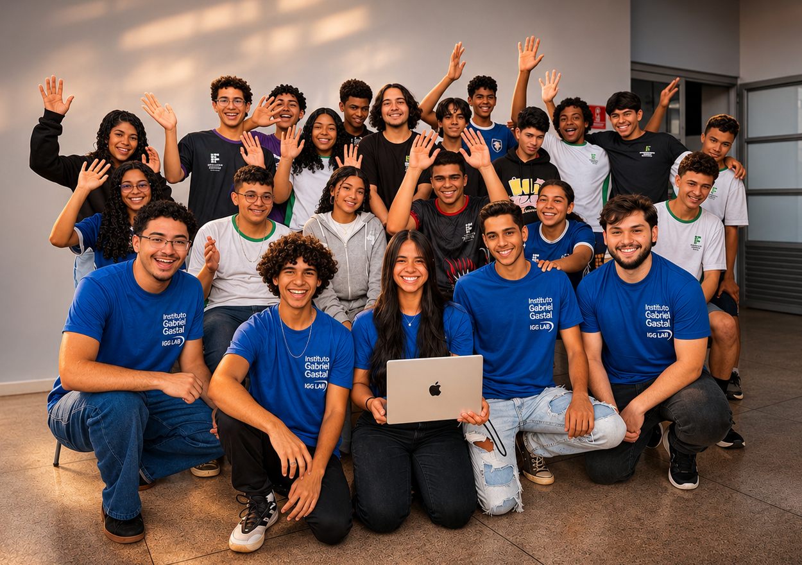

IGG | Instituto Gabriel Castral
Monitoria · 2026
Do luto à luta, Paloma Gastal transformou a perda de seu filho Gabriel, aos 18 anos, em propósito. Apaixonado por tecnologia, ele inspirou a criação do Instituto Gabriel Gastal (IGG), que democratiza o acesso à tecnologia, promove a cibersegurança e cria oportunidades para crianças, adolescentes e jovens. O Instituto também promove a inclusão das minorias. Hoje, essa missão ganha escala por meio de parcerias nacionais e internacionais, guiada por um compromisso: garantir a todos o direito a um futuro com oportunidades.
Atuar como monitora no Instituto Gabriel Castral tem sido uma experiência muito enriquecedora. Junto a outros três colegas, tenho a oportunidade de compartilhar conhecimentos e ensinar alunos do 1º ano do Ensino Médio sobre prototipação de sistemas utilizando o Figma. Durante as aulas, buscamos apresentar conceitos de tecnologia e desenvolvimento de interfaces de forma prática, criativa e acessível. Tem sido muito gratificante acompanhar o interesse, a participação e a evolução dos alunos a cada encontro, além de desenvolver minhas próprias habilidades de comunicação, colaboração e ensino.
Links e matérias
Voltar